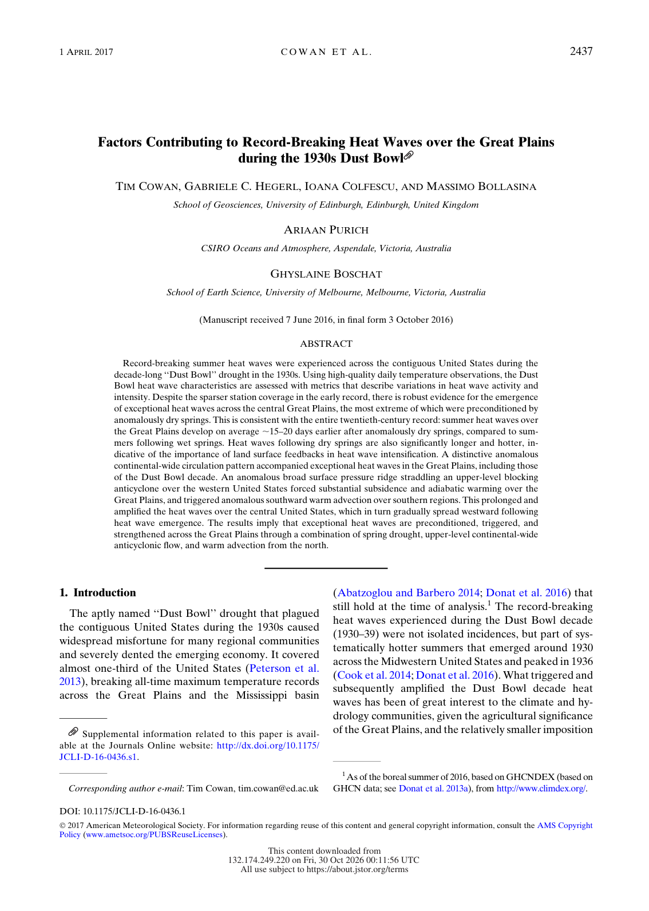
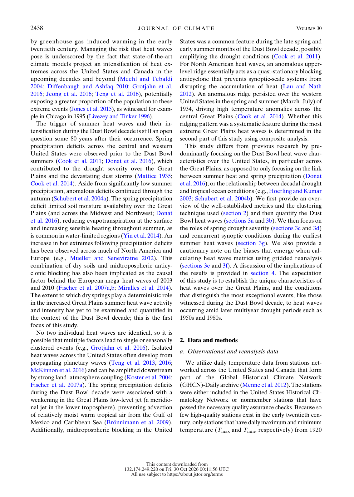

<!DOCTYPE html>
<html lang="en">
<head>
  <meta charset="UTF-8">
  <meta name="viewport" content="width=device-width, initial-scale=1.0">
  <meta name="description" content="Factors Contributing to Record-Breaking Heat Waves over the Great Plains during the 1930s Dust Bowl. Scholarly Article A23.8 for Unit 6: Modern America.">
  <meta name="theme-color" content="#8A3A1E">
  <title>Scholarly Article A23.8 | Factors Contributing to Record-Breaking Heat Waves over the Great Plains during the 1930s Dust Bowl</title>
  <link rel="canonical" href="https://www.thegarzaarchive.org/APUSH/Unit_6/Sources/Scholarly_Articles/A23.08_Factors_Contributing_Record_Breaking_Heat.html">
  <link rel="preconnect" href="https://fonts.googleapis.com">
  <link rel="preconnect" href="https://fonts.gstatic.com" crossorigin>
  <link href="https://fonts.googleapis.com/css2?family=Cinzel:wght@500;600;700&amp;family=Cormorant+Garamond:ital,wght@0,500;0,600;0,700;1,500;1,600&amp;family=Inter:wght@500;600;700;800&amp;display=swap" rel="stylesheet">
  <style>
    :root {
      --forest: #8A3A1E;
      --forest-mid: #B85C2E;
      --coral: #3B5B77;
      --coral-light: #7FA1BD;
      --cream: #F6EFE7;
      --paper: #FCFAF8;
      --mint: #E5ECF2;
      --sage: #EDD6CB;
      --ink: #4C2010;
      --muted: #865A4A;
      --shadow: 0 22px 55px rgba(83, 35, 18, .14);
      --heading: 'Cinzel', Georgia, serif;
      --body: 'Cormorant Garamond', Georgia, serif;
      --ui: Inter, Arial, sans-serif;
      --coral-text: #A35128;
    }

    * { box-sizing: border-box; }
    html { scroll-behavior: smooth; }
    body {
      margin: 0;
      min-width: 320px;
      background: var(--cream);
      color: var(--ink);
      font-family: var(--body);
      font-size: 19px;
      line-height: 1.65;
    }
    body::before {
      content: '';
      position: fixed;
      inset: 0;
      z-index: -1;
      background:
        radial-gradient(circle at 94% 4%, rgba(59, 91, 119, .12), transparent 25rem),
        linear-gradient(145deg, rgba(255,255,255,.55), transparent 48%);
      pointer-events: none;
    }
    a { color: inherit; }
    :focus-visible { outline: 3px solid var(--coral-light); outline-offset: 3px; }
    .skip-link {
      position: fixed;
      top: -5rem;
      left: 1rem;
      z-index: 1000;
      padding: .65rem 1rem;
      background: var(--paper);
      color: var(--forest);
      font: 700 .75rem var(--ui);
    }
    .skip-link:focus { top: 1rem; }

    .archive-bar {
      position: sticky;
      top: 0;
      z-index: 100;
      color: var(--paper);
      background: rgba(138, 58, 30, .98);
      border-bottom: 4px solid var(--coral);
      box-shadow: 0 4px 18px rgba(83, 35, 18, .18);
    }
    .archive-bar__inner {
      width: min(1120px, calc(100% - 2rem));
      min-height: 64px;
      margin: 0 auto;
      display: flex;
      align-items: center;
      justify-content: space-between;
      gap: 1.5rem;
    }
    .archive-link {
      display: inline-flex;
      align-items: center;
      gap: .7rem;
      color: var(--paper);
      font: 700 .72rem var(--ui);
      letter-spacing: .12em;
      text-decoration: none;
      text-transform: uppercase;
    }
    .archive-link span { color: var(--coral-light); font-size: 1.1rem; }
    .archive-link:hover { color: var(--coral-light); }
    .archive-meta {
      color: var(--sage);
      font: 700 .68rem var(--ui);
      letter-spacing: .12em;
      text-transform: uppercase;
    }
    .reading-progress {
      position: absolute;
      left: 0;
      bottom: -4px;
      width: 0;
      height: 4px;
      background: var(--coral-light);
      transform-origin: left center;
    }

    .document-shell {
      position: relative;
      width: min(940px, calc(100% - 2rem));
      margin: clamp(1.5rem, 4vw, 3.5rem) auto 4rem;
      overflow: hidden;
      background: var(--paper);
      border: 1px solid var(--sage);
      border-top: 7px solid var(--coral);
      box-shadow: var(--shadow);
    }
    .document-shell::before {
      content: attr(data-code);
      position: absolute;
      top: 2rem;
      right: 1.5rem;
      color: rgba(184, 92, 46, .055);
      font: 700 clamp(5rem, 15vw, 10rem)/.8 var(--heading);
      pointer-events: none;
    }
    .legacy-source {
      width: 100% !important;
      max-width: none !important;
      margin: 0 !important;
      background: transparent !important;
      border-collapse: collapse;
    }
    .source-content {
      position: relative;
      padding: clamp(2.25rem, 7vw, 5rem) !important;
    }
    .source-kicker {
      position: relative;
      margin: 0 0 1rem !important;
      color: var(--coral-text) !important;
      font: 800 .7rem var(--ui) !important;
      letter-spacing: .18em !important;
    }
    .source-title {
      position: relative;
      max-width: 760px;
      margin: 0 0 1rem !important;
      color: var(--forest) !important;
      font: 600 clamp(2.35rem, 6vw, 4.45rem)/1.04 var(--heading) !important;
      letter-spacing: -.025em;
      text-wrap: balance;
    }
    .source-byline {
      position: relative;
      max-width: 720px;
      margin: 0 0 2.1rem !important;
      color: var(--forest-mid) !important;
      font: 600 clamp(1rem, 2vw, 1.15rem)/1.55 var(--body) !important;
      font-style: italic !important;
    }
    .title-rule {
      margin: 0 0 2rem !important;
    }
    .title-rule td { border-top: 1px solid var(--coral) !important; }

    .context-grid {
      margin: 0 0 3rem !important;
      overflow: hidden;
      background: var(--mint) !important;
      border: 1px solid var(--sage);
      border-left: 5px solid var(--coral);
    }
    .context-grid td:first-child {
      width: 23% !important;
      padding: 1rem 1rem .75rem 1.2rem !important;
      color: var(--coral-text) !important;
      font: 800 .65rem var(--ui) !important;
      letter-spacing: .14em !important;
    }
    .context-grid td:last-child {
      padding: 1rem 1.25rem .75rem .75rem !important;
      color: var(--ink) !important;
      font: 600 .86rem/1.65 var(--ui) !important;
    }
    .context-grid tr + tr td { border-top: 1px solid var(--sage); }

    .section-heading {
      display: block !important;
      width: fit-content;
      margin: 3.6rem 0 1.4rem !important;
      padding: .45rem 0 .55rem !important;
      color: var(--forest) !important;
      border-top: 4px solid var(--coral);
      border-bottom: 1px solid var(--sage) !important;
      font: 700 clamp(1rem, 2vw, 1.25rem) var(--heading) !important;
      letter-spacing: .04em;
    }
    .section-spacer { height: 0 !important; }
    .citation-label {
      max-width: 67ch;
      margin: 1.3rem auto .4rem !important;
      color: var(--coral-text) !important;
      font: 800 .7rem var(--ui) !important;
      letter-spacing: .08em;
      text-transform: uppercase;
    }
    .document-subheading {
      max-width: 67ch;
      margin: 1.8rem auto .65rem !important;
      color: var(--forest-mid) !important;
      font: 700 .84rem/1.5 var(--ui) !important;
      letter-spacing: .035em;
    }
    .legacy-source p {
      max-width: 67ch;
      margin: 0 auto 1.05em !important;
      color: var(--ink) !important;
      font: 500 clamp(1.08rem, 1.8vw, 1.22rem)/1.78 var(--body) !important;
    }
    .legacy-source p a {
      color: var(--forest-mid) !important;
      text-decoration-color: var(--coral-light) !important;
      text-underline-offset: .18em;
      word-break: break-word !important;
    }
    .legacy-source p a:hover { color: var(--coral-text) !important; }

    .editorial-note {
      max-width: 67ch;
      margin: 1.4rem auto 2.5rem !important;
      background: var(--mint) !important;
      border: 1px solid var(--sage);
    }
    .editorial-note td {
      padding: 1rem 1.2rem !important;
      color: var(--forest-mid) !important;
      border-left: 4px solid var(--coral) !important;
      font: 600 .79rem/1.65 var(--ui) !important;
    }
    .source-media {
      max-width: 67ch;
      margin: 1.25rem auto 2.5rem !important;
      background: var(--mint) !important;
      border: 1px solid var(--sage);
    }
    .source-media td { padding: 1rem !important; }
    .source-media img {
      display: block;
      width: auto !important;
      max-width: 100% !important;
      height: auto !important;
      margin: 0 auto;
    }
    .source-media td[style*="font-family"] {
      color: var(--muted) !important;
      font: 600 .72rem/1.55 var(--ui) !important;
    }
    .source-footer { padding: 0 clamp(2.25rem, 7vw, 5rem) 2rem !important; }
    .source-imprint { margin-top: 1rem !important; }
    .source-imprint td {
      padding-top: 1rem !important;
      color: var(--muted) !important;
      border-top: 1px solid var(--sage) !important;
      font: 700 .63rem var(--ui) !important;
      letter-spacing: .12em !important;
    }
    .document-actions {
      width: min(940px, calc(100% - 2rem));
      margin: -2rem auto 4rem;
      display: flex;
      justify-content: center;
    }
    .document-actions a {
      display: inline-flex;
      align-items: center;
      gap: .65rem;
      padding: .8rem 1.1rem;
      color: var(--forest);
      border: 1px solid var(--sage);
      background: var(--paper);
      font: 800 .68rem var(--ui);
      letter-spacing: .12em;
      text-decoration: none;
      text-transform: uppercase;
    }
    .document-actions a:hover { border-color: var(--coral); color: var(--coral-text); }

    @media (max-width: 680px) {
      .archive-bar__inner { min-height: 58px; }
      .archive-meta { display: none; }
      .document-shell { width: calc(100% - 1rem); margin-top: .75rem; }
      .source-content { padding: 2rem 1.25rem !important; }
      .document-shell::before { top: 1.2rem; right: .35rem; }
      .source-title { font-size: clamp(2rem, 10vw, 2.85rem) !important; }
      .context-grid tr, .context-grid td { display: block; width: 100% !important; }
      .context-grid td:first-child { padding-bottom: .25rem !important; }
      .context-grid td:last-child { padding: 0 1.2rem 1rem !important; }
      .context-grid tr + tr td:last-child { border-top: 0; }
      .source-footer { padding: 0 1.25rem 1.5rem !important; }
      .document-actions { margin-top: -2.4rem; }
    }

    @media print {
      @page { margin: .65in; }
      body { background: #fff; font-size: 11pt; }
      body::before, .archive-bar, .skip-link, .document-actions, .document-shell::before { display: none !important; }
      .document-shell { width: 100%; margin: 0; border: 0; box-shadow: none; }
      .source-content { padding: 0 !important; }
      .legacy-source p { max-width: none; font-size: 11pt !important; line-height: 1.5 !important; }
      .context-grid, .editorial-note { break-inside: avoid; }
      .source-footer { padding: 1rem 0 0 !important; }
    }

    @media (prefers-reduced-motion: reduce) {
      html { scroll-behavior: auto; }
    }

  
    .source-table { max-width: 67ch; margin: 0 auto 1.05em; border-collapse: collapse; font: 500 1.1rem/1.6 var(--body); color: var(--ink); }
    .source-table td { padding: .2rem .9rem .2rem 0; border-bottom: 1px dotted var(--sage); }
    .source-table td:last-child { text-align: right; }
    .legacy-source blockquote {
      max-width: 62ch; margin: 0 auto 1.2em !important; padding: .9rem 1.2rem;
      background: var(--mint); border-left: 4px solid var(--coral);
    }
    .legacy-source blockquote p { max-width: none; margin: 0 0 .6em !important; }
    .legacy-source blockquote p:last-child { margin-bottom: 0 !important; }
    .page-text { max-width: 67ch; margin: -1rem auto 2.2rem; border: 1px solid var(--sage); background: var(--paper); }
    .page-text summary { cursor: pointer; padding: .7rem 1rem; color: var(--forest-mid); font: 700 .72rem var(--ui); letter-spacing: .06em; text-transform: uppercase; }
    .page-text[open] summary { border-bottom: 1px solid var(--sage); }
    .page-text p { margin: .9rem 1.1rem !important; font: 500 1rem/1.6 var(--body) !important; white-space: pre-line; }
    .legacy-source sup { font: 700 .68em var(--ui); line-height: 0; }
  </style>
</head>
<body id="top">
  <a class="skip-link" href="#document">Skip to document</a>
  <nav class="archive-bar" aria-label="Scholarly Article navigation">
    <div class="archive-bar__inner">
      <a class="archive-link" href="https://www.thegarzaarchive.org/APUSH/Unit_6/Sources/Scholarly_Articles/"><span aria-hidden="true">←</span> Scholarly Article Archive</a>
      <div class="archive-meta">Unit 6 · Chapter 23 · A23.8</div>
    </div>
    <div class="reading-progress" id="reading-progress" aria-hidden="true"></div>
  </nav>
  <main class="document-shell" id="document" data-code="A23.8">
    <article aria-labelledby="source-title">
<table role="presentation" width="100%" cellpadding="0" cellspacing="0" border="0" style="background-color:#F6EFE7; max-width:820px; margin:0 auto;" class="legacy-source">
  <tr><td style="padding:32px 36px 20px 36px;" class="source-content">
<div style="font-family:Arial, Helvetica, sans-serif; color:#A35128; font-size:13px; font-weight:700; letter-spacing:0.5px; text-transform:uppercase; margin-bottom:8px;" class="source-kicker">Scholarly Article A23.8</div>
<div style="font-family:Georgia, 'Times New Roman', serif; color:#8A3A1E; font-size:30px; font-weight:700; line-height:1.2; margin-bottom:8px;" class="source-title" id="source-title" role="heading" aria-level="1">Factors Contributing to Record-Breaking Heat Waves over the Great Plains during the 1930s Dust Bowl</div>
<div style="font-family:Arial, Helvetica, sans-serif; color:#A35128; font-size:14px; font-weight:700; line-height:1.5; margin-bottom:16px;" class="source-byline">Tim Cowan; Gabriele C. Hegerl; Ioana Colfescu; Massimo Bollasina; Ariaan Purich; Ghyslaine Boschat</div>
<table role="presentation" width="100%" cellpadding="0" cellspacing="0" border="0" style="margin-bottom:20px;" class="title-rule"><tr><td style="border-top:4px solid #3B5B77; font-size:1px; line-height:1px;">&nbsp;</td></tr></table>
<table role="presentation" width="100%" cellpadding="0" cellspacing="0" border="0" style="background-color:#7FA1BD; border-collapse:collapse; margin-bottom:26px;" class="context-grid">
  <tr>
    <td valign="top" style="width:22%; padding:12px 12px 8px 14px; font-family:Arial, Helvetica, sans-serif; color:#8A3A1E; font-size:12px; font-weight:700; letter-spacing:1px; text-transform:uppercase;">ARTICLE</td>
    <td valign="top" style="padding:12px 14px 8px 12px; font-family:Arial, Helvetica, sans-serif; color:#8A3A1E; font-size:13.5px; line-height:1.55;">Factors Contributing to Record-Breaking Heat Waves over the Great Plains during the 1930s Dust Bowl</td>
  </tr>
  <tr>
    <td valign="top" style="width:22%; padding:8px 12px 8px 14px; font-family:Arial, Helvetica, sans-serif; color:#8A3A1E; font-size:12px; font-weight:700; letter-spacing:1px; text-transform:uppercase;">JOURNAL</td>
    <td valign="top" style="padding:8px 14px 8px 12px; font-family:Arial, Helvetica, sans-serif; color:#8A3A1E; font-size:13.5px; line-height:1.55;">Journal of Climate 30, no. 7 (2017)</td>
  </tr>
  <tr>
    <td valign="top" style="width:22%; padding:8px 12px 8px 14px; font-family:Arial, Helvetica, sans-serif; color:#8A3A1E; font-size:12px; font-weight:700; letter-spacing:1px; text-transform:uppercase;">EXCERPT</td>
    <td valign="top" style="padding:8px 14px 8px 12px; font-family:Arial, Helvetica, sans-serif; color:#8A3A1E; font-size:13.5px; line-height:1.55;">Original journal pages 2437-2438</td>
  </tr>
  <tr>
    <td valign="top" style="width:22%; padding:8px 12px 12px 14px; font-family:Arial, Helvetica, sans-serif; color:#8A3A1E; font-size:12px; font-weight:700; letter-spacing:1px; text-transform:uppercase;">JSTOR</td>
    <td valign="top" style="padding:8px 14px 12px 12px; font-family:Arial, Helvetica, sans-serif; color:#8A3A1E; font-size:13.5px; line-height:1.55;"><a href="https://www.jstor.org/stable/26387956">https://www.jstor.org/stable/26387956</a></td>
  </tr>
</table>
<div style="display:inline-block; font-family:Arial, Helvetica, sans-serif; color:#A35128; font-size:17px; font-weight:700; border-bottom:2px solid #3B5B77; padding-bottom:4px; margin:6px 0 14px 0;" class="section-heading" role="heading" aria-level="2">Selection Overview</div>
<p style="font-family:Georgia, 'Times New Roman', serif; color:#8A3A1E; font-size:15px; line-height:1.7; margin:0 0 14px 0; ">Cowan and colleagues find that the Dust Bowl's extreme summer heat waves were preconditioned by dry springs and then intensified by continental-scale atmospheric circulation, including a blocking ridge and warm advection. Land-surface feedbacks from dry soils helped amplify the heat.</p>
<div style="display:inline-block; font-family:Arial, Helvetica, sans-serif; color:#A35128; font-size:17px; font-weight:700; border-bottom:2px solid #3B5B77; padding-bottom:4px; margin:6px 0 14px 0;" class="section-heading" role="heading" aria-level="2">Excerpt Format</div>
<p style="font-family:Georgia, 'Times New Roman', serif; color:#8A3A1E; font-size:15px; line-height:1.7; margin:0 0 14px 0; ">The next two pages are exact facsimiles from the supplied article PDF. Original pagination and the author’s note system are preserved.</p>
<div style="display:inline-block; font-family:Arial, Helvetica, sans-serif; color:#A35128; font-size:17px; font-weight:700; border-bottom:2px solid #3B5B77; padding-bottom:4px; margin:6px 0 14px 0;" class="section-heading" role="heading" aria-level="2">Facsimile Excerpt</div>
<table role="presentation" width="100%" cellpadding="0" cellspacing="0" border="0" style="margin:6px 0 24px 0;" class="source-media"><tr>
  <td style="text-align:center; padding:14px; background-color:#FFFFFF; border:1px solid #7FA1BD;">
    
    <div style="font-family:Arial, Helvetica, sans-serif; color:#8A3A1E; font-size:12.5px; line-height:1.55; margin-top:10px; text-align:left;">Original journal page 2437.</div>
  </td>
</tr></table>
<details class="page-text"><summary>Text of this page (original journal page 2437)</summary>
<p>Factors Contributing to Record-Breaking Heat Waves over the Great Plains
during the 1930s Dust Bowl
TIM COWAN, GABRIELE C. HEGERL, IOANA COLFESCU, AND MASSIMO BOLLASINA
School of Geosciences, University of Edinburgh, Edinburgh, United Kingdom
ARIAAN PURICH
CSIRO Oceans and Atmosphere, Aspendale, Victoria, Australia
GHYSLAINE BOSCHAT
School of Earth Science, University of Melbourne, Melbourne, Victoria, Australia
(Manuscript received 7 June 2016, in final form 3 October 2016)
ABSTRACT
Record-breaking summer heat waves were experienced across the contiguous United States during the
decade-long ‘‘Dust Bowl’’ drought in the 1930s. Using high-quality daily temperature observations, the Dust
Bowl heat wave characteristics are assessed with metrics that describe variations in heat wave activity and
intensity. Despite the sparser station coverage in the early record, there is robust evidence for the emergence
of exceptional heat waves across the central Great Plains, the most extreme of which were preconditioned by
anomalously dry springs. This is consistent with the entire twentieth-century record: summer heat waves over
the Great Plains develop on average ;15–20 days earlier after anomalously dry springs, compared to sum-
mers following wet springs. Heat waves following dry springs are also significantly longer and hotter, in-
dicative of the importance of land surface feedbacks in heat wave intensification. A distinctive anomalous
continental-wide circulation pattern accompanied exceptional heat waves in the Great Plains, including those
of the Dust Bowl decade. An anomalous broad surface pressure ridge straddling an upper-level blocking
anticyclone over the western United States forced substantial subsidence and adiabatic warming over the
Great Plains, and triggered anomalous southward warm advection over southern regions. This prolonged and
amplified the heat waves over the central United States, which in turn gradually spread westward following
heat wave emergence. The results imply that exceptional heat waves are preconditioned, triggered, and
strengthened across the Great Plains through a combination of spring drought, upper-level continental-wide
anticyclonic flow, and warm advection from the north.
1. Introduction
The aptly named ‘‘Dust Bowl’’ drought that plagued
the contiguous United States during the 1930s caused
widespread misfortune for many regional communities
and severely dented the emerging economy. It covered
almost one-third of the United States (Peterson et al.
2013), breaking all-time maximum temperature records
across the Great Plains and the Mississippi basin
(Abatzoglou and Barbero 2014; Donat et al. 2016) that
still hold at the time of analysis.1 The record-breaking
heat waves experienced during the Dust Bowl decade
(1930–39) were not isolated incidences, but part of sys-
tematically hotter summers that emerged around 1930
across the Midwestern United States and peaked in 1936
(Cook et al. 2014; Donat et al. 2016). What triggered and
subsequently amplified the Dust Bowl decade heat
waves has been of great interest to the climate and hy-
drology communities, given the agricultural significance
of the Great Plains, and the relatively smaller imposition
Supplemental information related to this paper is avail-
able at the Journals Online website: http://dx.doi.org/10.1175/
JCLI-D-16-0436.s1.
Corresponding author e-mail: Tim Cowan, tim.cowan@ed.ac.uk
1As of the boreal summer of 2016, based on GHCNDEX (based on
GHCN data; see Donat et al. 2013a), from http://www.climdex.org/.
1 APRIL 2017
C O W A N E T A L .
2437
DOI: 10.1175/JCLI-D-16-0436.1
 2017 American Meteorological Society. For information regarding reuse of this content and general copyright information, consult the AMS Copyright
Policy (www.ametsoc.org/PUBSReuseLicenses).
This content downloaded from 
132.174.249.220 on Fri, 30 Oct 2026 00:11:56 UTC 
All use subject to https://about.jstor.org/terms</p></details>
<table role="presentation" width="100%" cellpadding="0" cellspacing="0" border="0" style="margin:6px 0 24px 0;" class="source-media"><tr>
  <td style="text-align:center; padding:14px; background-color:#FFFFFF; border:1px solid #7FA1BD;">
    
    <div style="font-family:Arial, Helvetica, sans-serif; color:#8A3A1E; font-size:12.5px; line-height:1.55; margin-top:10px; text-align:left;">Original journal page 2438.</div>
  </td>
</tr></table>
<details class="page-text"><summary>Text of this page (original journal page 2438)</summary>
<p>by greenhouse gas–induced warming in the early
twentieth century. Managing the risk that heat waves
pose is underscored by the fact that state-of-the-art
climate models project an intensification of heat ex-
tremes across the United States and Canada in the
upcoming decades and beyond (Meehl and Tebaldi
2004; Diffenbaugh and Ashfaq 2010; Grotjahn et al.
2016; Jeong et al. 2016; Teng et al. 2016), potentially
exposing a greater proportion of the population to these
extreme events (Jones et al. 2015), as witnessed for exam-
ple in Chicago in 1995 (Livezey and Tinker 1996).
The trigger of summer heat waves and their in-
tensification during the Dust Bowl decade is still an open
question some 80 years after their occurrence. Spring
precipitation deficits across the central and western
United States were observed prior to the Dust Bowl
summers (Cook et al. 2011; Donat et al. 2016), which
contributed to the drought severity over the Great
Plains and the devastating dust storms (Mattice 1935;
Cook et al. 2014). Aside from significantly low summer
precipitation, anomalous deficits continued through the
autumn (Schubert et al. 2004a). The spring precipitation
deficit limited soil moisture availability over the Great
Plains (and across the Midwest and Northwest; Donat
et al. 2016), reducing evapotranspiration at the surface
and increasing sensible heating throughout summer, as
is common in water-limited regions (Yin et al. 2014). An
increase in hot extremes following precipitation deficits
has been observed across much of North America and
Europe (e.g., Mueller and Seneviratne 2012). This
combination of dry soils and midtropospheric anticy-
clonic blocking has also been implicated as the causal
factor behind the European mega–heat waves of 2003
and 2010 (Fischer et al. 2007a,b; Miralles et al. 2014).
The extent to which dry springs play a deterministic role
in the increased Great Plains summer heat wave activity
and intensity has yet to be examined and quantified in
the context of the Dust Bowl decade; this is the first
focus of this study.
No two individual heat waves are identical, so it is
possible that multiple factors lead to single or seasonally
clustered events (e.g., Grotjahn et al. 2016). Isolated
heat waves across the United States often develop from
propagating planetary waves (Teng et al. 2013, 2016;
McKinnon et al. 2016) and can be amplified downstream
by strong land–atmosphere coupling (Koster et al. 2004;
Fischer et al. 2007a). The spring precipitation deficits
during the Dust Bowl decade were associated with a
weakening in the Great Plains low-level jet (a meridio-
nal jet in the lower troposphere), preventing advection
of relatively moist warm tropical air from the Gulf of
Mexico and Caribbean Sea (Brönnimann et al. 2009).
Additionally, midtropospheric blocking in the United
States was a common feature during the late spring and
early summer months of the Dust Bowl decade, possibly
amplifying the drought conditions (Cook et al. 2011).
For North American heat waves, an anomalous upper-
level ridge essentially acts as a quasi-stationary blocking
anticyclone that prevents synoptic-scale systems from
disrupting the accumulation of heat (Lau and Nath
2012). An anomalous ridge persisted over the western
United States in the spring and summer (March–July) of
1934, driving high temperature anomalies across the
central Great Plains (Cook et al. 2014). Whether this
ridging pattern was a systematic feature during the most
extreme Great Plains heat waves is determined in the
second part of this study using composite analysis.
This study differs from previous research by pre-
dominantly focusing on the Dust Bowl heat wave char-
acteristics over the United States, in particular across
the Great Plains, as opposed to only focusing on the link
between summer heat and spring precipitation (Donat
et al. 2016), or the relationship between decadal drought
and tropical ocean conditions (e.g., Hoerling and Kumar
2003; Schubert et al. 2004b). We first provide an over-
view of the well-established metrics and the clustering
technique used (section 2) and then quantify the Dust
Bowl heat waves (sections 3a and 3b). We then focus on
the roles of spring drought severity (sections 3c and 3d)
and concurrent synoptic conditions during the earliest
summer heat waves (section 3g). We also provide a
cautionary note on the biases that emerge when cal-
culating heat wave metrics using gridded reanalysis
(sections 3e and 3f). A discussion of the implications of
the results is provided in section 4. The expectation
of this study is to establish the unique characteristics of
heat waves over the Great Plains, and the conditions
that distinguish the most exceptional events, like those
witnessed during the Dust Bowl decade, to heat waves
occurring amid later multiyear drought periods such as
1950s and 1980s.
2. Data and methods
a. Observational and reanalysis data
We utilize daily temperature data from stations net-
worked across the United States and Canada that form
part
of
the
Global
Historical
Climate
Network
(GHCN)-Daily archive (Menne et al. 2012). The stations
were either included in the United States Historical Cli-
matology Network or nonmember stations that have
passed the necessary quality assurance checks. Because so
few high-quality stations exist in the early twentieth cen-
tury, only stations that have daily maximum and minimum
temperature (Tmax and Tmin, respectively) from 1920
2438
J O U R N A L O F C L I M A T E
VOLUME 30
This content downloaded from 
132.174.249.220 on Fri, 30 Oct 2026 00:11:56 UTC 
All use subject to https://about.jstor.org/terms</p></details>
<div style="display:inline-block; font-family:Arial, Helvetica, sans-serif; color:#A35128; font-size:17px; font-weight:700; border-bottom:2px solid #3B5B77; padding-bottom:4px; margin:6px 0 14px 0;" class="section-heading" role="heading" aria-level="2">Chicago Citations</div>
<div style="font-family:Arial, Helvetica, sans-serif; color:#A35128; font-size:13px; font-weight:700; margin:4px 0 6px 0;" class="citation-label">Bibliography entry:</div>
<p style="font-family:Georgia, 'Times New Roman', serif; color:#8A3A1E; font-size:15px; line-height:1.7; margin:0 0 14px 0; padding-left:36px; text-indent:-36px;">Cowan, Tim, Gabriele C. Hegerl, Ioana Colfescu, Massimo Bollasina, Ariaan Purich, and Ghyslaine Boschat. “Factors Contributing to Record-Breaking Heat Waves over the Great Plains during the 1930s Dust Bowl.” <em>Journal of Climate</em> 30, no. 7 (2017): 2437–2461. https://www.jstor.org/stable/26387956.</p>
<div style="font-family:Arial, Helvetica, sans-serif; color:#A35128; font-size:13px; font-weight:700; margin:4px 0 6px 0;" class="citation-label">Footnote citation:</div>
<p style="font-family:Georgia, 'Times New Roman', serif; color:#8A3A1E; font-size:15px; line-height:1.7; margin:0 0 14px 0; ">Tim Cowan et al., “Factors Contributing to Record-Breaking Heat Waves over the Great Plains during the 1930s Dust Bowl,” <em>Journal of Climate</em> 30, no. 7 (2017): 2437–38, https://www.jstor.org/stable/26387956.</p>
<div style="font-family:Arial, Helvetica, sans-serif; color:#A35128; font-size:13px; font-weight:700; margin:4px 0 6px 0;" class="citation-label">Shortened citation:</div>
<p style="font-family:Georgia, 'Times New Roman', serif; color:#8A3A1E; font-size:15px; line-height:1.7; margin:0 0 14px 0; ">Cowan et al., “Factors Contributing to Record-Breaking,” 2437–38.</p>
<div style="display:inline-block; font-family:Arial, Helvetica, sans-serif; color:#A35128; font-size:17px; font-weight:700; border-bottom:2px solid #3B5B77; padding-bottom:4px; margin:6px 0 14px 0;" class="section-heading" role="heading" aria-level="2">Source Verification</div>
<p style="font-family:Georgia, 'Times New Roman', serif; color:#8A3A1E; font-size:15px; line-height:1.7; margin:0 0 14px 0; ">Supplied PDF pages 2-3 correspond to original journal pages 2437-2438. The pages were inserted directly from the supplied PDF; no transcription or silent omission was introduced.</p>
  </td></tr>
  <tr><td style="padding:0 36px 22px 36px;" class="source-footer">
<table role="presentation" width="100%" cellpadding="0" cellspacing="0" border="0" style="margin-top:10px;" class="source-imprint"><tr>
  <td style="padding-top:12px; border-top:1px solid #3B5B77; font-family:Arial, Helvetica, sans-serif; color:#A35128; font-size:11px; letter-spacing:1px; text-transform:uppercase; text-align:center;">UNIT 6 · MODERN AMERICA | HISTORY C1002 | DANIEL GARZA, M.A.</td>
</tr></table>
  </td></tr>
</table>

    </article>
  </main>
  <div class="document-actions">
    <a href="https://www.thegarzaarchive.org/APUSH/Unit_6/Sources/Scholarly_Articles/"><span aria-hidden="true">←</span> Return to the Scholarly Article Archive</a>
  </div>
  <script>
    (() => {
      const progress = document.getElementById('reading-progress');
      const updateProgress = () => {
        const scrollable = document.documentElement.scrollHeight - window.innerHeight;
        const percent = scrollable > 0 ? Math.min(100, Math.max(0, window.scrollY / scrollable * 100)) : 0;
        progress.style.width = `${percent}%`;
      };
      updateProgress();
      window.addEventListener('scroll', updateProgress, { passive: true });
      window.addEventListener('resize', updateProgress);
    })();
  </script>
</body>
</html>
